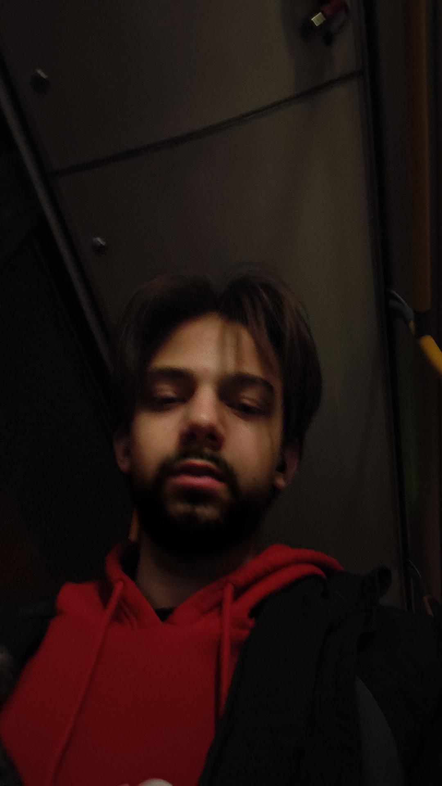

|
Lakatzárfeltörő II. Gusztáv Tulajdonos / Főszakács |
 Szinesfémmozgató Roland Pizzaszakács |
Autohajto Hugó Leonidasz Futár |
Füves Kevin Pultos / Telefonos |
Üdvözöljük a Guszti Pizzázóban! Családias hangulatú éttermünk Minta Város szívében található, ahol a tradicionális olasz receptek alapján, kizárólag friss és minőségi alapanyagokból készítjük ropogós tésztájú, gazdagon feltétezett pizzáinkat. Célunk, hogy minden vendégünk elégedetten távozzon, és visszatérjen hozzánk egy újabb ízletes falatra. Várjuk szeretettel!
Cím: 1234 Minta Város, Pizza utca 5.
Telefon (rendelés): +36 1 234 5678
Email: info@gusztipizza.hu
Guszti Pizzázó © 2025
Cím: 6500 Baja, Március 15 sétány utca 5. | Tel: +36 30 907 1049 | Email: info@gusztipizza.hu